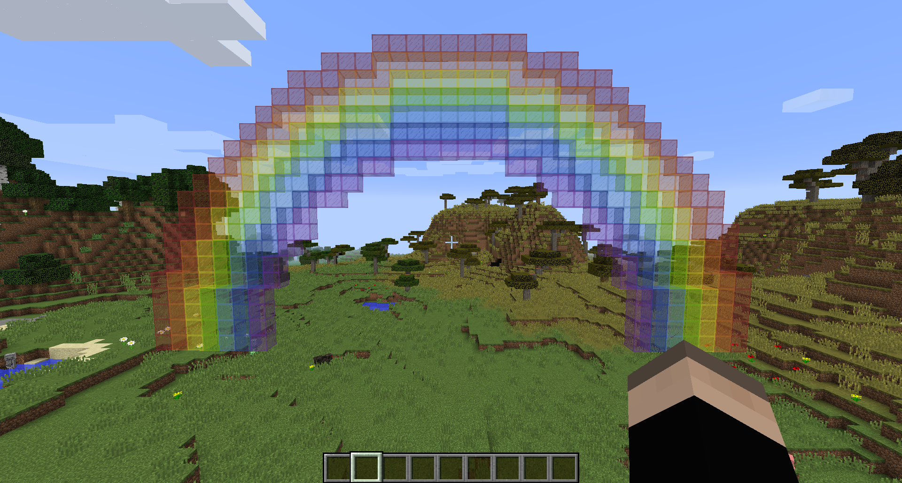

The Drone Plugin
This portion of ScriptCraft lets you build blocks in Minecraft with Javascript code! It's awesome because it has super handy methods for placing blocks and you can use loops to repeat the process! You can code the first story of a building, and then place a loop around that to make a skyscraper and then a loop around that will create a city!
Rainbows 4 dayz
Here's a little taste of the Drone plugin and what it can do. Go to your in game prompt and type
/js rainbow();
This should be the result.
The Drone Object
First we need to construct a Drone Object. It's best to think of a Drone Object as an invisible block in Minecraft which lets you add code to manipulate it. This piece of code creates a Drone object and when it's called, it will create an invisible block two blocks in front of you.
var droneObject = new Drone(self);
Now, what happens if we add .box(blocks.diamond_ore) to the end of that variable?

/js var droneObject = new Drone(self).box(blocks.diamond_ore);
The box method accepts 1 argument, but you can also give it a width, height, and length! .box(blocks.BLOCK, w, h, l);
/js var droneObject = new Drone(self).box(blocks.diamond_ore, 4, 10, 2);
Making Stuff Move
Now it's time to make stuff move. We can add
.up()to our drone object to move the location of it. We're basically moving the reference point! You can put a number larger than 1 in the parentheses to make the reference block move farther but the default is 1. The
.down()
.left()
.right()
.fwd()
.back()
.turn()
.turn() method turns our reference point 90 degrees clockwise!
/js var droneObject = new Drone(self).box(blocks.diamond_ore);
/js droneObject.fwd(2).box(blocks.emerald_ore);
The Cylinder Method
The Cylinder method allows us to easily make cylinders. .cylinder(blocks.BLOCK, radius, height);

/js var droneObject = new Drone(self).cylinder(blocks.ice, 7, 1);
The Exports Module
The Exports module lets us store our code inside callable functions from the Minecraft in-game prompt!
var cowSound = function() {
echo(self, "moooo");
};
exports.cowSound = cowSound;This code can now be called in game with /js cowSound();
The For Loop
The For loop is a handy tool which allows to loop a limited number of times. We need it to loop through each layer of the pokeball! A For loop looks like the following:
for (initialization of counter variable; test condition; iterator of counter variable) {
*do something*
}
for (var i = 0; i < 5; i++) {
echo(self, "this loop has ran " i + 1 "times!");
}The For loop above will print out: "This loop has ran 1 times" "This loop has ran 2 times" ... up to 5!
Now let's use a For loop in ScriptCraft!

var crazyBlocks = function() {
var droneObject = new Drone(self);
for (var i = 0; i < 6; i++) {
droneObject.up(2).cylinder(blocks.iron, i, 1);
}
};
exports.crazyBlocks = crazyBlocks;
Woah! This produces a pretty crazy result. The drone object doesn't center itself when we increase the radius in a for loop.
Centering the Drone Object (Reference Point)
To center the drone object so that we can get a perfect sphere, we need to .left().back() when increasing the radius by 1 when moving up, and .right().fwd() when decreasing the radius by 1 when moving up.
var crazyBlocks = function() {
var droneObject = new Drone(self);
for (var i = 3; i < 8; i++) {
droneObject.up(2).cylinder(blocks.wool.brown, i, 1).left().back();
}
};
exports.crazyBlocks = crazyBlocks;
Sweet! We have now made an ice cream cone. It seems that there's a gap with each layer however, how would we get rid of that?!
Finishing it off
You should now have enough knowledge to finish the challenge. You know how to make the bottom half of a sphere, and then you can add a single layer of cylinder for the middle and then another for loop for the top half. It's okay to manually place wool for the button of the pokeball but there's bonus points if you can code it in there.
Also, to make the ball more "sphere-like", create a for loop for the bottom half, and then create a cylinder of that same bottom half color with the same size radius. Here's an example
var crazyBlocks = function() {
var droneObject = new Drone(self);
for (var i = 3; i < 8; i++) {
droneObject.up().cylinder(blocks.wool.white, i, 1).left().back();
}
droneObject.up().fwd().right().cylinder(blocks.wool.white, END-RADIUS, 1);
droneObject.up().cylinder(blocks.wool.black, END-RADIUS, 1);
};